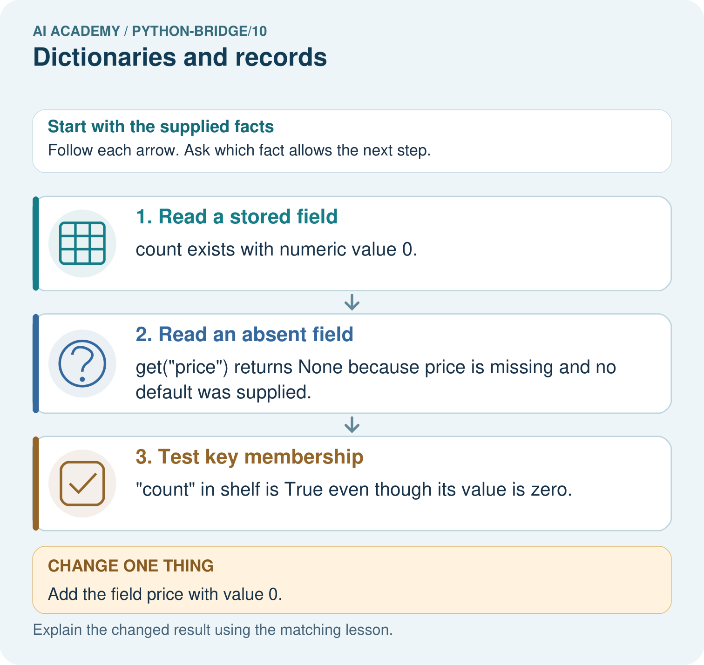
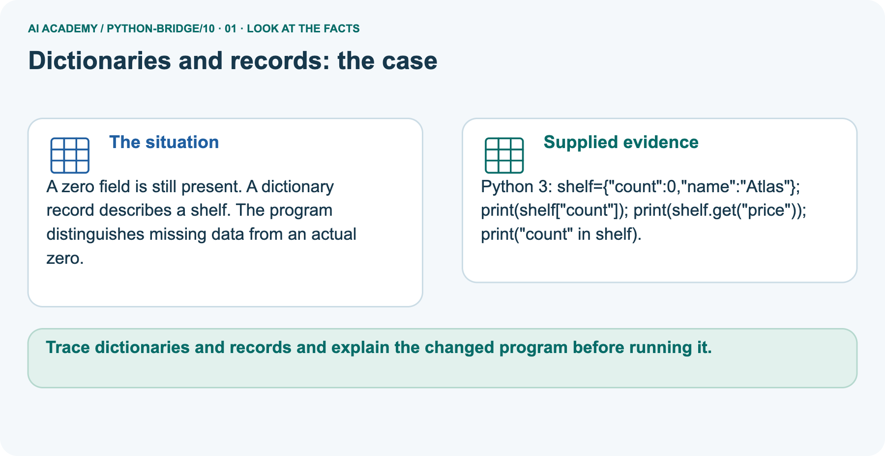
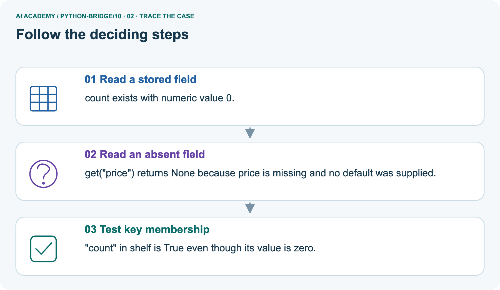
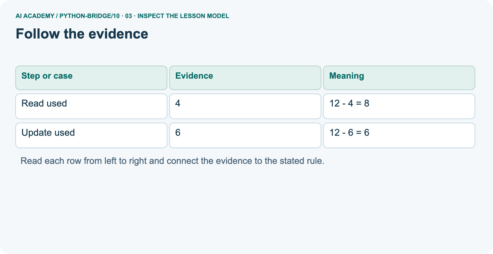
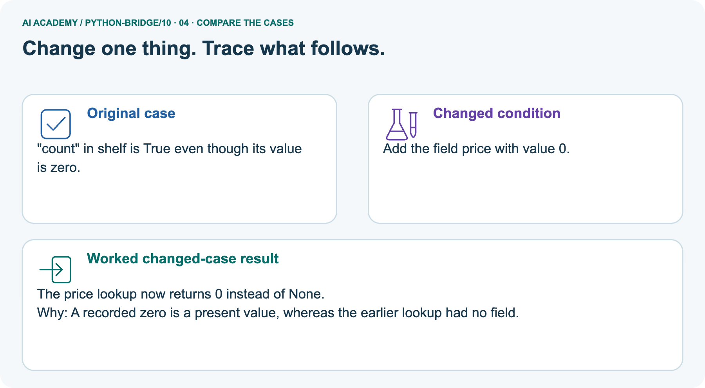
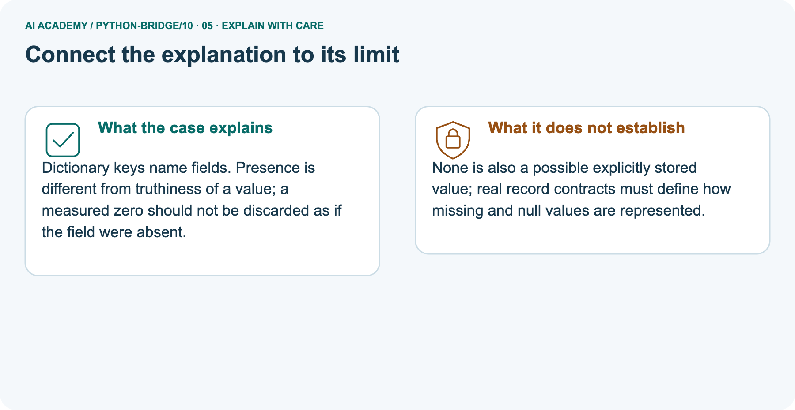
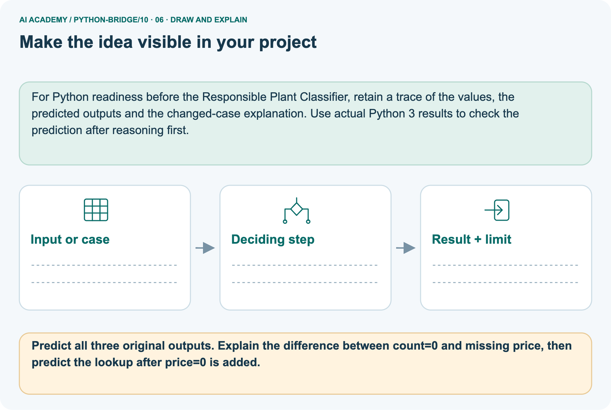

AI Academy · Python readiness bridge · Workbook
Dictionaries and records
Learn to understand, design, build, test and explain AI systems responsibly.
Project: Python readiness portfolio
THE CONNECTED WEEK
One connected dictionary-and-record record.
Explain keys, trace an update, repair wrong-case access and distinguish missing from zero.
Keep one habit: Keep record identity, field name/type, update, membership and schema evidence together.
Main lesson · Section 1
Recall · Retrieve before notes
Keep the stated task, its own code/values and support record together.
Task and evidence record
Try the recall before opening notes. Then use a different colour or a labelled second line to correct your explanation.
Without opening the old lesson, explain one key idea from Return values and local state. Give an example and a mistake that the idea helps you avoid.
Without opening the old lesson, explain one key idea from Lists and indexing. Give an example and a mistake that the idea helps you avoid.
Without opening the old lesson, explain one key idea from Boolean conditions. Give an example and a mistake that the idea helps you avoid.
Return values and local state
Lists and indexing
Boolean conditions
Main lesson · Section 5
W1 · Explain the procedure
Keep the stated task, its own code/values and support record together.
Task and evidence record
Separate records: Blue capacity 12/used 4→used 6 gives remaining 8 then 6. Red capacity 9/used 2→used 9 gives remaining 0, capacity stays 9. Keys are case sensitive: Used is not used. Schema requires used<=capacity; capacity 3/used 4 violates it despite arithmetic -1. Shelf count 0 is present; absent price get returns None.
Explicit priceNone is also possible but membership True; get alone does not distinguish presence. Selected describe policy treats absent/None as unavailable, not zero.
For {"name": "Red", "capacity": 9, "used": 2}, state the keys, value of used and remaining spaces.
Main lesson · Section 6
W2 · Predict, trace and observe
Keep the stated task, its own code/values and support record together.
Task and evidence record
Separate records: Blue capacity 12/used 4→used 6 gives remaining 8 then 6. Red capacity 9/used 2→used 9 gives remaining 0, capacity stays 9. Keys are case sensitive: Used is not used. Schema requires used<=capacity; capacity 3/used 4 violates it despite arithmetic -1. Shelf count 0 is present; absent price get returns None.
Explicit priceNone is also possible but membership True; get alone does not distinguish presence. Selected describe policy treats absent/None as unavailable, not zero.
Change the Red record used to 9. State remaining spaces and whether capacity changes.
Main lesson · Section 7
W3 · Find the first error
Keep the stated task, its own code/values and support record together.
Task and evidence record
Separate records: Blue capacity 12/used 4→used 6 gives remaining 8 then 6. Red capacity 9/used 2→used 9 gives remaining 0, capacity stays 9. Keys are case sensitive: Used is not used. Schema requires used<=capacity; capacity 3/used 4 violates it despite arithmetic -1. Shelf count 0 is present; absent price get returns None.
Explicit priceNone is also possible but membership True; get alone does not distinguish presence. Selected describe policy treats absent/None as unavailable, not zero.
The code reads record["Used"] from the Red record. Explain the error and repair it without adding a field.
Main lesson · Section 9
W5 · State an honest limit
Keep the stated task, its own code/values and support record together.
Task and evidence record
Separate records: Blue capacity 12/used 4→used 6 gives remaining 8 then 6. Red capacity 9/used 2→used 9 gives remaining 0, capacity stays 9. Keys are case sensitive: Used is not used. Schema requires used<=capacity; capacity 3/used 4 violates it despite arithmetic -1. Shelf count 0 is present; absent price get returns None.
Explicit priceNone is also possible but membership True; get alone does not distinguish presence. Selected describe policy treats absent/None as unavailable, not zero.
A record has capacity 3 and used 4. It gives -1 spaces without an error. Should it be accepted? Explain.
Main lesson · Section 4
Try alone · Selected independent task
Keep the stated task, its own code/values and support record together.
Task and evidence record
Predict the three outputs and trace the named-field update. Explain why zero and a missing count produce different results. If the condition becomes if not count, which supplied record is first handled incorrectly?
Attempt this case before feedback. Record any help. Earlier examples below are further practice; a case already practised with feedback cannot establish fresh transfer.
Independent case: Read, update and pass a dictionary record
def describe(record):
count = record.get("count")
if count is None:
return "missing"
return count
record = {"count": 0}
print(describe(record))
record["count"] = 3
print(describe(record))
print(describe({}))
Main lesson · Section 10
Project · Keep code and evidence
Keep the stated task, its own code/values and support record together.
Task and evidence record
Add a labelled dictionaries and records evidence sheet to Python readiness portfolio. Show how you can read and update named dictionary fields.
Use the supplied fictional case and keep its inputs, intermediate steps, calculation or prediction, and limitation. Connect this record to last week’s record; a matching answer without a trace is insufficient.
Main lesson · Section 11
Feedback · Repair and return
Keep the stated task, its own code/values and support record together.
Task and evidence record
Revisit this idea with your teacher after a delay. Familiarity is different from explaining and using it on a changed case.
| Evidence | My record |
|---|---|
| Worked alone / hint / model | |
| First step I repaired and why | |
| New case checked later; date and result | |
| What I can now explain without notes | |
| One remaining question |
Reference bank and extra practice
Choose the reference that helps your next step.
Reference · Supported W2 record
Reference · Section 2
Reference · Supported W2 record
Keep the stated task, its own code/values and support record together.
Task and evidence record
Use W2: Trace an update for Dictionaries and records. Record the answer once; the lesson and workbook refer to the same attempt.
| Given inputs | Procedure I chose | Middle steps | Result and check |
|---|---|---|---|
Extra practice · Individual reasoning check
Reference · Section 3
Extra practice · Individual reasoning check
Keep the stated task, its own code/values and support record together.
Task and evidence record
Use the worked case for Dictionaries and records. Proposed explanation: “A successful run proves the conclusion”. Decide whether this explanation is supported.
Point to the step or supplied fact that decides; explain your repair if needed.
Additional practice · Earlier W4 transfer
Reference · Section 8
Additional practice · Earlier W4 transfer
Keep the stated task, its own code/values and support record together.
Task and evidence record
Create a Green record with capacity 15 and used 6. Pass its fields to remaining and store the result. Update used to 10 and repeat. Predict both results.
Extra practice · Pictured case
Reference · Section 12
Extra practice · Pictured case
Keep the stated task, its own code/values and support record together.
Task and evidence record
A zero field is still present. A dictionary record describes a shelf. The program distinguishes missing data from an actual zero.
Python 3: shelf={"count":0,"name":"Atlas"}; print(shelf["count"]); print(shelf.get("price")); print("count" in shelf).
Predict all three original outputs. Explain the difference between count=0 and missing price, then predict the lookup after price=0 is added.
Support used: alone / hint / worked example. This record is practice evidence.
Project connection: For Python readiness before the Responsible Plant Classifier, retain a trace of the values, the predicted outputs and the changed-case explanation.
Use actual Python 3 results to check the prediction after reasoning first.



Reference · Project portfolio milestone
Reference · Section 13
Reference · Project portfolio milestone
Keep the stated task, its own code/values and support record together.
Task and evidence record
Project: Python readiness portfolio
Current milestone: Python readiness portfolio. Keep runnable code, predictions, actual outputs, one repaired error and an explanation of a function on changed inputs.
For Python readiness before the Responsible Plant Classifier, retain a trace of the values, the predicted outputs and the changed-case explanation. Use actual Python 3 results to check the prediction after reasoning first.
| Evidence to keep | My record |
|---|---|
| This week’s input and deciding step | |
| Prediction and actual result (or labelled paper trace) | |
| One change since the previous checkpoint and why | |
| One error or limit and the next test |
Extra practice · Predict, check and repair
Reference · Section 14
Extra practice · Predict, check and repair
Use only after an attempt; keep the reserved assessment separate.
First question and hint
A zero field is still present. A dictionary record describes a shelf. The program distinguishes missing data from an actual zero.
Which labelled step matches this detail? "count" in shelf is True even though its value is zero.
1. Test key membership
2. Read an absent field
3. Read a stored field
Hint if needed: Read the steps in the pictorial case. Match the supplied detail to the stage that performs or records it.
Practice 1: explain the deciding evidence
Check the first explanation
After your attempt, compare with the supported explanation: Test key membership "count" in shelf is True even though its value is zero. Dictionary keys name fields.
Presence is different from truthiness of a value; a measured zero should not be discarded as if the field were absent.
Changed-case question and hint
Changed-case practice: Add the field price with value 0. Which conclusion is supported by the supplied facts?
1. The price lookup now returns 0 instead of None.
2. We can decide the result without examining the changed input or the procedure.
3. This one example guarantees correct results for every future input.
Hint if needed: Use the changed condition and the deciding step in the pictorial trace. The answer must say what follows from those facts.
Practice 2: explain the deciding evidence
Check the changed explanation
After your attempt, compare with the supported explanation: The price lookup now returns 0 instead of None. A recorded zero is a present value, whereas the earlier lookup had no field.
Repair and keep the record
Review Return values and local state (python-bridge/9). Goal: Use a returned value in a later calculation. Short practice: Trace the two returned values and explain why first stays seven.
What happens if the caller tries to print result directly?. Return to this week and explain what you changed.
Review Lists and indexing (python-bridge/7). Goal: Distinguish a list index from the value stored at that position. Short practice: Label the three index positions.
Predict all original outputs, then name the first output and stopping point after using index 3.. Return to this week and explain what you changed.
Review Boolean conditions (python-bridge/4). Goal: Translate stated requirements into comparisons. Short practice: Give both comparison results for ages 11, 15 and 16.
Which comparison rejects each outside value, and why does and matter?. Return to this week and explain what you changed.
The browser lab lets you edit the supported Python examples already included in this lesson. Predict first, run, inspect the actual output or error, change one input, then run again.
Keep code, predictions, actual results and a reasoned revision together. On paper, label your result as a trace rather than an execution.
Use Download completed work in the hosted lesson to export your answers, reflections, practice feedback and code-run evidence. Open the HTML copy to read or print it.
Drafts stay in this browser when storage is available; clear drafts on a shared device.
Earlier wording, alternatives and picture transcripts
Use this supported practice once, in the browser or on paper. Keep the reserved independent assessment for a separate first attempt before teacher feedback.
Repair a missing building block
Predict, run and debug
Keep your completed work
Reference · Six-picture response sheets
Reference · Section 15
Reference · Six-picture response sheets
Use the picture relevant to a current gap.
01. Dictionaries and records: the case



A zero field is still present. A dictionary record describes a shelf. The program distinguishes missing data from an actual zero.
Supplied facts: Python 3: shelf={"count":0,"name":"Atlas"}; print(shelf["count"]); print(shelf.get("price")); print("count" in shelf).
Point to the given fact that matters most. Explain why it matters.
02. Follow the deciding steps



Read a stored field: count exists with numeric value 0. → Read an absent field: get("price") returns None because price is missing and no default was supplied. → Test key membership: "count" in shelf is True even though its value is zero.
Point to each numbered stage and explain which recorded input it uses.
03. Follow the evidence



Follow the evidence. Read used | 4 | 12 - 4 = 8. Update used | 6 | 12 - 6 = 6
Read the labels and values. Explain the relationship the model shows.
04. Change one thing. Trace what follows.



Original case: "count" in shelf is True even though its value is zero. Changed condition: Add the field price with value 0. Expected result: The price lookup now returns 0 instead of None.
Reason: A recorded zero is a present value, whereas the earlier lookup had no field.
Predict before checking the worked changed-case result. Name what changed and what the supplied facts allow you to conclude.
05. Connect the explanation to its limit



Dictionary keys name fields. Presence is different from truthiness of a value; a measured zero should not be discarded as if the field were absent.
Limit: None is also a possible explicitly stored value; real record contracts must define how missing and null values are represented.
Explain the case, then point to a limit on the claim.
06. Make the idea visible in your project



For Python readiness before the Responsible Plant Classifier, retain a trace of the values, the predicted outputs and the changed-case explanation. Use actual Python 3 results to check the prediction after reasoning first.
Draw your input, deciding step, result and limit. Supported question: Predict all three original outputs. Explain the difference between count=0 and missing price, then predict the lookup after price=0 is added.
Draw your project trace and justify the deciding step using evidence.